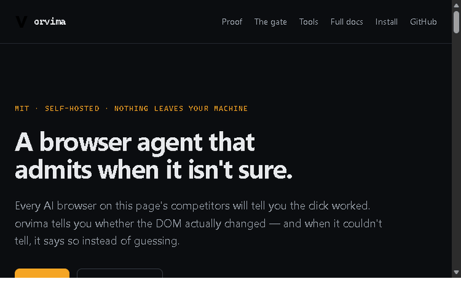

Typical browser MCP
Reports ok: true the moment the click is dispatched. Never re-reads the DOM.
MIT · self-hosted · nothing leaves your machine
Most browser MCPs tell you the click worked. orvima tells you whether the DOM actually changed — and when it couldn't tell, it says so instead of guessing.
irm https://raw.githubusercontent.com/Sachitt-AV-08/orvima/main/install.ps1 | iexcurl -fsSL https://raw.githubusercontent.com/Sachitt-AV-08/orvima/main/install.sh | bashgit clone https://github.com/Sachitt-AV-08/orvima
cd orvima && uv syncLatest stable release: v0.1.6 — 49 MCP tools across 9 domains. `main` also carries an unreleased v0.2.0.
The gate read the selector, judged it outward, and stopped. The click never ran.
Another agent returns ok when the click is dispatched. orvima re-reads the DOM and reports verified — and verified: false when it couldn't confirm.
Reports ok: true the moment the click is dispatched. Never re-reads the DOM.
Re-reads the DOM afterwards. Returns verified: false when it could not confirm.
Three parts, each honest and testable, that together carry a goal from your agent to a verified change on the page.
Claude, Cursor, Copilot, your own agent
49 tools across 9 domains
sentinel classifier: run / ask / refuse
Attaches to your browser at 127.0.0.1
errands router: goals match reviewed recipes or are refused
orvima (browser + gate) + sentinel (local action classifier) + errands (recipe router). Monorepo roadmap.
Not a mockup. Every line below was produced by executing orvima and reading what it returned. The site acme.dev is fictional and built into orvima, so this runs offline with no browser and no network — which is what makes it reproducible.
ok: true the moment the click is dispatchedverifiedverified: false when it could not confirm127.0.0.1, against your own browserAny MCP-capable AI can be told to click. The difference is what happens when the thing in front of it is a delete button. orvima's gate stops, shows a human what is about to happen, and refuses to proceed unless the page still looks the same when they answer.
A tool call is classified. Routine work — navigating, reading, filling a form — is not interrupted.
The pending action carries its risk, the page title, the URL and the element's own text. A decision you cannot check is not a decision.
From the local UI, or from your phone over your own network. No token, no buttons are rendered at all.
Your approval referred to the page as it looked when it was queued. orvima classifies once more against the page as it is now, so an approval cannot be spent on something that has since been replaced.
Come back in an hour and the card is gone, with the reason. A stale approval is not something you can act on.

The gate sees the selector, judges it outward, queues for human, and the click never runs.
If the gate cannot be built, orvima does not disable it — it gates everything, and says why. A malfunction must never have the same effect as a decision to turn safety off.
Every row below is a claim orvima proves with its own test suite.
| Typical browser MCP | orvima | |
|---|---|---|
| Verification | Reports ok on dispatch |
Re-reads DOM, reports verified; verified: false when unsure |
| Approval gate | None or coarse "destructive?" | Local classifier: run / ask / refuse; re-checks page at decision time; expires approvals |
| Privacy & locality | Often cloud or fresh browser | Runs on 127.0.0.1; attaches to your running browser; cookies never leave |
| MCP-native | Varies | 49 MCP tools across 9 domains over one dict-in/dict-out contract; works with any MCP client |
| Goal routing | Generative planning (may hallucinate) | errands: goal matches a reviewed recipe or is refused; no generative planning |
127.0.0.1Every tool is plain dict-in, dict-out over one contract. Your cookies and sessions never leave the machine. Nine domains: browse, mail, WhatsApp, voice, media, math, science, gate, router.
The count above is the v0.2.0 release surface on `main`. 49 tools across 9 domains, all on 127.0.0.1.
Reproduce them yourself:
python -m pytest --cov=orvima
python -m ruff check src tests
python -m orvima.bench
The bench runs against a simulated site with a scripted planner. It measures the agent loop's control flow, not real-world browsing ability — a high score there is not evidence orvima can drive your site.
The questions that decide whether an agent tool survives past a demo.
No. Install it and connect it to Claude Desktop, Cursor or Copilot. Autonomous runs can use any OpenAI-compatible brain, including local Ollama.
No. Everything runs on 127.0.0.1 against your own browser. Cookies, sessions and scrapes never leave your machine.
Routine work runs freely. Outward actions (delete, purchase, send) are held by a fail-closed gate and expire if unanswered.
Yes. MIT licensed, self-hosted, no account. You own every byte and every commit.
No browser, no network, no keys. Runs against the built-in simulator.
orvima run "send a message to Acme support"MCP config for Claude Desktop, Cursor or Copilot is in the README.
git clone https://github.com/Sachitt-AV-08/orvima
cd orvima && uv syncorvima mcp with no flags launches a browser you own and can watch. The offline tour is still one flag away — --mode demo, or orvima demo — but you now ask for it rather than inherit it.